Travail en hauteur
Port du harnais
Vendredi 2 octobre 2026 · La Seyne-sur-Mer · Consulteam Security
09:00–09:20 · Accueil. Émargement matin, tour de table : tâches réelles en hauteur de chacun (toiture, terrasse, échelle, ligne de vie, industrie). Rappeler que la formation générique ne remplace pas l’analyse de risques du poste.
Six objectifs pour la journée
Objectifs tels qu’écrits dans le programme SECU37 (CONSUL TEAM). Public : personnel amené à travailler en hauteur ; équipiers de seconde intervention.
Une journée, dix séquences
| Horaire | Séquence | Modalité |
|---|---|---|
| 09:00 | Accueil, objectifs, règles | Tour de table |
| 09:20 | Risques de chute, responsabilités, prévention | Études de cas |
| 10:10 | Protection collective, retenue, maintien, arrêt de chute | Présentation commentée |
| 11:00 | EPI, ancrages, tirant d’air, pendule | Démonstration au sol |
| 11:50 | Préparer l’intervention : météo, balisage, secours | Exercice de groupe |
| 13:30 | Reconnaissance de la zone, briefing pratique | Observation guidée |
| 14:10 | Ateliers supervisés : harnais, nœuds, ancrage, ligne de vie | Grille individuelle |
| 15:35 | Échelle, transferts, conduite après chute | Mise en situation |
| 16:15 | QCM et retour sur les choix | QCM corrigé |
| 16:40 | Bilan individuel, clôture | Grille + émargement |
Pause déjeuner 12:30–13:30, hors des 7 heures. Horaires indicatifs, ajustés au site et au groupe.
Source : kit de préparation §3. Les ateliers du programme (test de suspension, nœuds, longe double verticale, évacuation) ne sont réalisés que si matériel, compétences du formateur et conditions du site le permettent en sécurité ; sinon démonstration au sol ou étude de cas, et écart consigné.
Règles de l’atelier
Prérequis
- Aptitude physique au travail en hauteur (suivi de santé au travail)
- Maîtrise du français pour suivre la formation
- Exercices pratiques non accessibles aux mineurs
Sur le terrain
- Personne n’est laissé seul lors d’un exercice exposant à une chute
- Au moindre doute : on arrête et on demande
- On n’altère aucun matériel destiné à l’emploi réel
- Notices et consignes du site priment
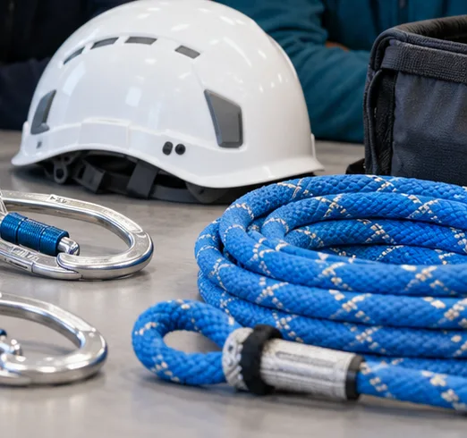
Ne pas collecter de données médicales détaillées : uniquement la confirmation d’aptitude par le client.
Les chutes de hauteur en France
Source : INRS, données 2019 — inrs.fr/risques/chutes-hauteur/accidents-travail.html
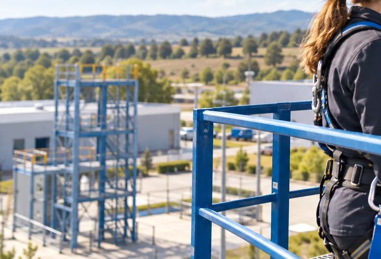
Toujours citer l’année (2019) et le périmètre. Les chiffres ont été relus sur la page INRS le 30/09/2026.
Où tombe-t-on ?
- Au bord d’une toiture ou d’une terrasse
- À travers une surface fragile
- Dans une ouverture non protégée
- Lors d’un transfert depuis une échelle
- Près d’une dénivellation, d’une plateforme sans garde-corps
Une faible hauteur ne garantit pas une faible gravité. Il n’existe aucun seuil légal de hauteur.
Demander au groupe : « Quelle est la hauteur la plus basse à laquelle vous avez vu quelqu’un se blesser ? » Repère INRS : la réglementation ne fixe pas de hauteur minimale.
Dans quel ordre décider ?
- Éviter le travail en hauteur (travailler depuis le sol, consigner, déplacer la tâche)
- Plan de travail sûr et protection collective (garde-corps, plateforme, échafaudage, filet)
- Accès sécurisé à ce poste
- Protection individuelle (EPI antichute) seulement si la protection collective est techniquement impossible
Principe général de prévention n° 8 : protection collective avant protection individuelle.
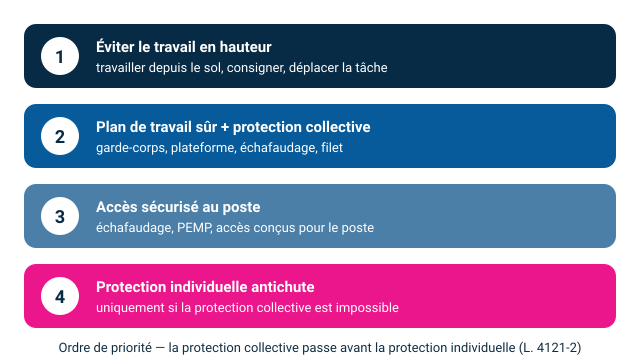
R. 4323-58 à 63 : priorité au plan de travail et aux protections collectives ; échelles, escabeaux et marchepieds ne servent de poste de travail que par exception (impossibilité technique, ou risque faible et courte durée).
Qui fait quoi ?
L’employeur
- Évalue les risques et organise la prévention
- Fournit des équipements adaptés et une notice précisant ancrages et usage
- Forme, informe, prévoit le secours
- Interdit le travail isolé avec arrêt de chute
Le travailleur
- Applique la formation et les consignes
- Contrôle son EPI avant chaque emploi
- Signale toute anomalie et écarte le matériel douteux
- Arrête en cas de doute
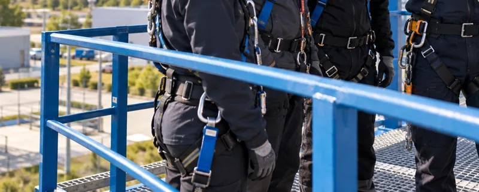
Références : L. 4121-1 (obligation de sécurité), R. 4323-61 (notice, travail non isolé). L’attestation de fin de formation ne vaut pas autorisation de travail délivrée par l’employeur.
Intervention sur une toiture terrasse
- Intervention courte demandée
- Accès par échelle mobile
- Une ouverture non protégée est visible
- Le vent se lève
- Le point d’ancrage proposé n’a aucun dossier
À faire
- Relever au moins 5 risques ou inconnues
- Proposer l’ordre de décision avant d’accéder
- Écrire 3 informations à demander au responsable du site
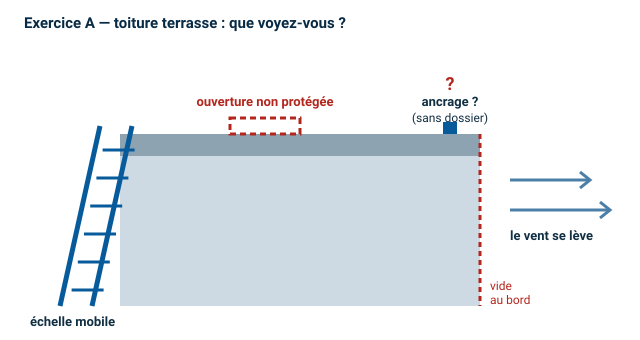
Corrigé. Risques : échelle et transfert, ouverture, bord, vent, ancrage non vérifié, obstacles, secours. Ne pas commencer sur la seule base d’un harnais disponible. Ordre : sécuriser l’ouverture et l’accès, apprécier la météo, chercher une protection collective, faire valider ancrage/support et système éventuel, définir le secours. À demander : plans/consignes, statut des ancrages, dispositif de secours.
L’ordre de décision
- Sécuriser l’ouverture et la zone
- Revoir l’accès et la protection collective
- Appliquer le critère météo du site
- Faire valider ancrage et support
- Confirmer secours et tirant d’air
Faire émerger chaque étape par les binômes avant de la révéler (touche → ou clic).
Le garde-corps réglementaire
Rigide, intégré ou fixé de manière sûre, de résistance appropriée — ou tout autre moyen assurant une sécurité équivalente.
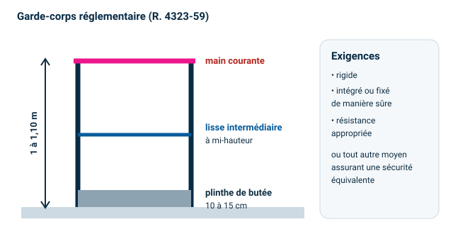
Article R. 4323-59 (code.travail.gouv.fr). Chiffres relus le 30/09/2026.
Trois usages à distinguer
Retenue
Empêche d’atteindre la zone de chute.
La longueur et le cheminement rendent-ils le bord inaccessible ?
Maintien au poste
Permet de travailler en appui.
Faut-il en plus un système d’arrêt de chute distinct ?
Arrêt de chute
Arrête une chute possible et retient la personne.
Système, ancrage, espace libre et secours adaptés ?
Un harnais seul n’est pas une protection.
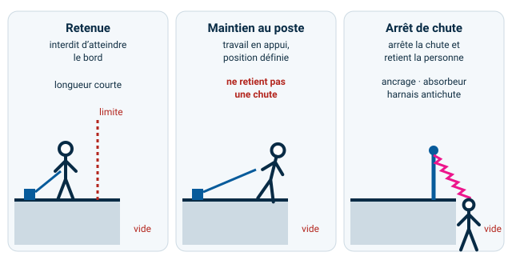
Source INRS : trois systèmes de protection individuelle — arrêt de chute, retenue, maintien au poste.
Un système d’arrêt de chute, c’est trois éléments compatibles
Ancrage
Point et support validés
Liaison
Longe, absorbeur, antichute mobile ou à rappel
Harnais
Ajusté, point d’attache prévu
- Pas de chute libre de plus d’un mètre
- Jamais seul : un secours doit pouvoir arriver à temps
- Une notice de l’employeur précise ancrages et usage
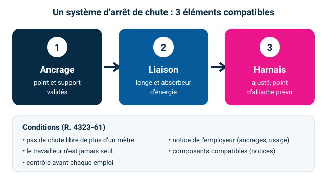
R. 4323-61 : à utiliser lorsque la protection collective est impossible. Vérifier compatibilité des connecteurs, diamètres, sens des antichutes, limites de la notice.
Reconnaître les six équipements
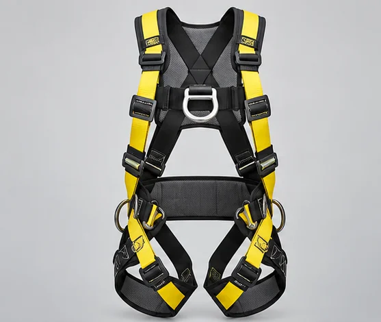
Harnais antichute Longe double + absorbeur
Longe double + absorbeur Antichute mobile
Antichute mobile Ligne de vie temporaire
Ligne de vie temporaire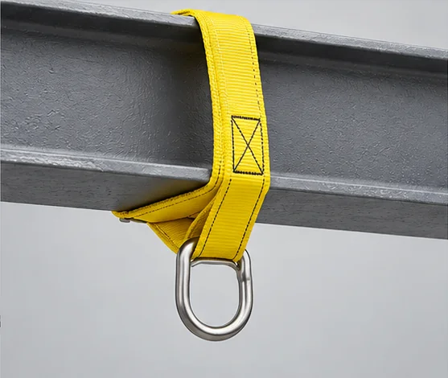
Sangle d’ancrage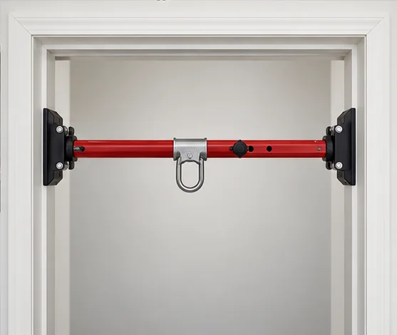
Barre d’ancrage de baieIllustrations générées — non contractuelles. Montrer ensuite les équipements réels.
Faire nommer chaque équipement et sa fonction avant de révéler la vignette suivante. Puis présenter le matériel réel de la session avec ses notices.
Avant chaque emploi : que regarde-t-on ?
Harnais & longes
- Identification, notice, suivi
- Sangles, coutures : coupure, abrasion, brûlure, produit chimique
- Témoin de chute de l’absorbeur
Boucles & connecteurs
- État, déformation, corrosion
- Fermeture et verrouillage
- Compatibilité de l’ensemble
Décision
- Doute = on écarte
- On signale
- On ne répare pas soi-même
La vérification périodique (au moins annuelle) ne remplace pas le contrôle avant emploi.
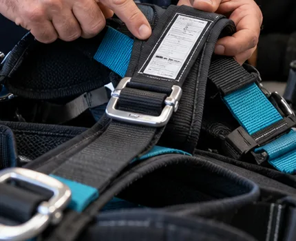
Exercice C : sur trois matériels de démonstration, relever identification, usage, état, contrôle fonctionnel, statut de vérification, décision. Ne jamais altérer du matériel destiné à l’emploi réel pour fabriquer un défaut.
S’équiper : la lecture de l’étiquette d’abord
- Lire marquage et notice
- Enfiler, ajuster toutes les sangles
- Fermer toutes les boucles
- Repérer le point d’attache prévu
- Contrôle croisé par le binôme
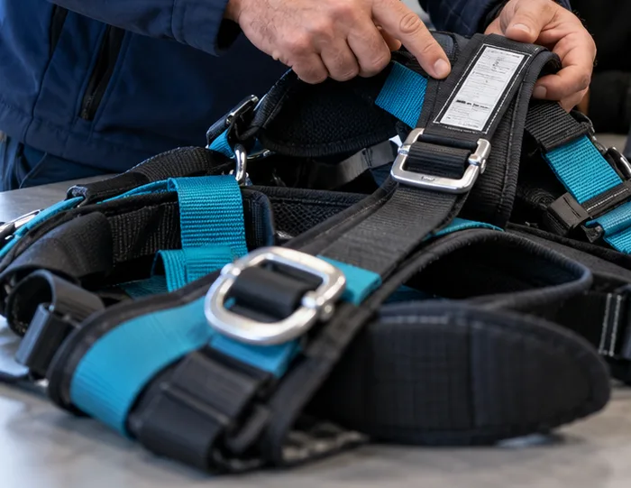
Le test de suspension n’est réalisé que dans une configuration prévue et validée, avec secours opérationnel ; sinon démonstration au sol. Vidéo Petzl « Principes généraux du travail en hauteur » en ressource.
Un point disponible n’est pas un ancrage
✓ Un ancrage, c’est…
- Un dispositif prévu et conforme à sa notice
- Un support évalué (nature, état, direction de charge)
- Placé haut
- Arêtes protégées
✗ Jamais par défaut
- Garde-corps, tuyauterie, chemin de câble
- Mobilier, poignée
- Maçonnerie friable, charpente non évaluée
En cas de doute : aucun accrochage.
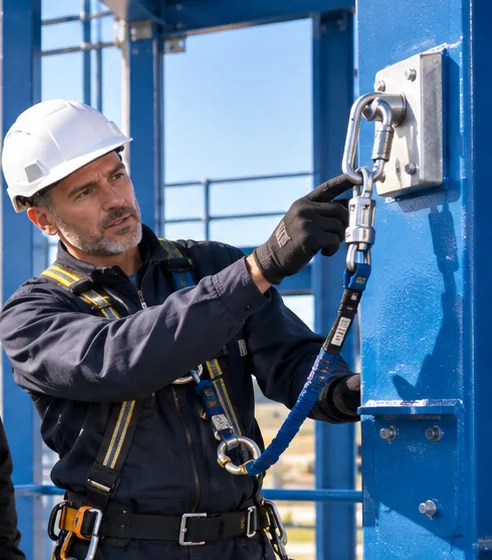
Élément structurel exceptionnel : évaluation documentée par une personne compétente, compatibilité avec la direction des efforts, protection des arêtes, plan validé.
Le tirant d’air : additionner, avec la notice
Les valeurs saisies viennent de la notice du matériel de la session.
- Lire la notice du système exact
- Aucun chiffre générique à retenir
- Vérifier chaque obstacle sur la trajectoire
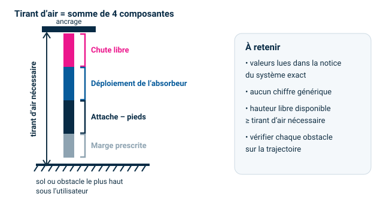
Faire saisir les valeurs d’un équipement réel de la salle. Ne pas fournir de valeurs types.
Facteur de chute · pendule · arêtes
Facteur = hauteur de chute ÷ longueur de liaison (0 à 2, modèle simple).
Pendule & arêtes
- Rester sous l’ancrage
- Repérer arêtes et obstacles
- Déplacer l’ancrage ou protéger l’arête
- Une gaine improvisée ne valide pas le système
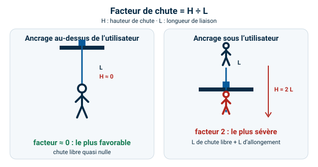
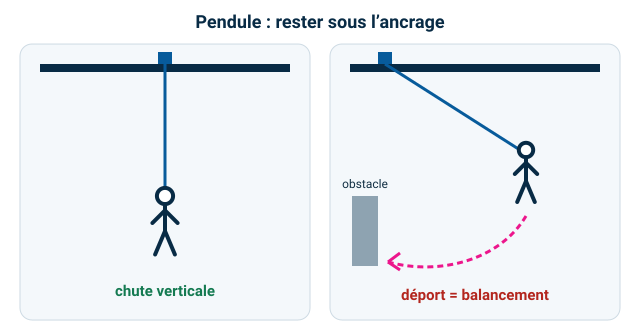
Exemple à faire manipuler : même chute, liaison plus courte → facteur plus élevé. Placer l’ancrage haut réduit le facteur.
Trois niveaux de contrôle
Avant chaque emploi
L’utilisateur. État, marquage, compatibilité, verrouillage.
Périodique
Personne compétente. Au moins annuel pour l’antichute (INRS). Trace : registre de sécurité, fiche de vie.
Après événement
Chute arrêtée : retrait du matériel, décision selon la notice.
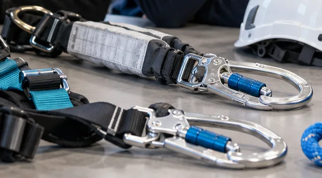
Références : R. 4323-99 à R. 4323-103. Ancrages et lignes de vie : selon notice et dossier d’installation ; support évalué par personne compétente.
STOP 5 — avant de commencer
tâche, durée, transferts
vide, fragile, accès, sol
autorisation, balisage, secours
supprimer, EPC, puis EPI
météo, compatibilité, tirant d’air
Une réponse manque ou change : pause, réévaluation, décision du responsable.
Aide-mémoire pédagogique du support d’origine ; il ne remplace pas l’analyse de risques du site.
Quand la météo décide
- Vent, pluie, visibilité, température
- Sol glissant, éclairage insuffisant
- Coactivité, circulation, chute d’objets
Règle
Pas de travaux temporaires en hauteur si les conditions météo ou de l’environnement peuvent compromettre la sécurité. On suspend ou on adapte.
Aucun seuil de vent universel : lire la notice de l’équipement et les consignes du site.
Conditions qui changent en cours de tâche : suspendre, sécuriser, réévaluer, nouvelle décision.
Prioriser : Gravité × Probabilité × Exposition
1–8 faible · 9–24 à réduire · 25–47 élevée · 48–64 arrêt / maîtrise préalable.
Seuils internes proposés, à adapter à votre matrice. Cet outil aide à prioriser ; il ne remplace ni le DUERP ni l’analyse du mode opératoire.
Faire tester sur le cas de l’exercice A (ouverture non protégée, vent).
Préparer le secours avant la chute
Une personne suspendue doit être secourue rapidement. Ne pas improviser un sauvetage qui expose d’autres personnes.
Aucun stagiaire n’est laissé seul lors d’un exercice exposant à une chute. Aucun stagiaire ne réalise un sauvetage réel.
Compléter le briefing avant toute mise en situation
- Contact d’alerte
- Adresse et accès des secours
- Responsable de zone
- Matériel de secours disponible
- Personne compétente pour l’utiliser
- Mode de communication
- Critère d’arrêt de l’exercice
Une rubrique manque ? L’activité se limite à une démonstration sans exposition au risque de chute.
Attendu : toutes les rubriques identifiées avant une mise en situation exposante.
Pause déjeuner
Reprise à 13 h 30 — reconnaissance de la zone pratique.
Profiter de la pause pour faire la reconnaissance de la zone avec le responsable de zone.
Ouvre-t-on la zone ? 10 vérifications
Décision : ateliers autorisés · limités à la démonstration · reportés — motif à consigner sur le formulaire.
Cases mémorisées sur cet appareil. Le formulaire officiel (avec signatures responsable de zone / formateur) est dans « Formulaires ».
Briefing avant les ateliers
- Vérifications individuelles de l’EPI (binôme)
- Cheminement autorisé, points de connexion, balisage
- Consignes d’arrêt : un mot, un geste, tout le monde stoppe
- Rôles secours rappelés, alerte testée sans exposition
- Aucun stagiaire seul en situation exposante
Grille individuelle A / EC / NA / NO : une erreur mettant immédiatement en danger entraîne l’arrêt de l’exercice et une reprise encadrée.
Dix ateliers, au sol puis en configuration validée
« Non réalisé / adapté » = exercice remplacé par une démonstration au sol ou une étude de cas ; consigner l’écart avec le programme sur le bilan collectif. L’évacuation est un briefing de secours et une simulation d’alerte : aucune manœuvre réelle improvisée.
Inspecter, régler, contrôler
- Examiner harnais, longe, connecteurs et fiche de vie
- Décider : conforme · à contrôler · réformé
- Enfiler, ajuster, contrôler les boucles
- Test de confort / suspension si configuration prévue
Trace : A / EC / NA / NO + observation et correction.
Nœuds de base : huit, cabestan, demi-cabestan + mule
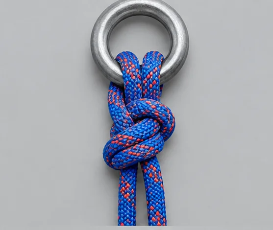
Huit tressé
Suivre le chemin, brin contre brin.
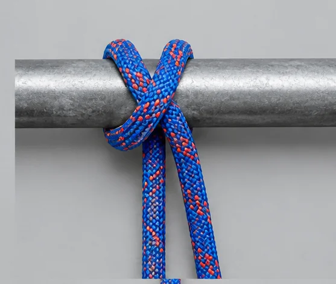
Cabestan
Amarrage et réglage, à surveiller.
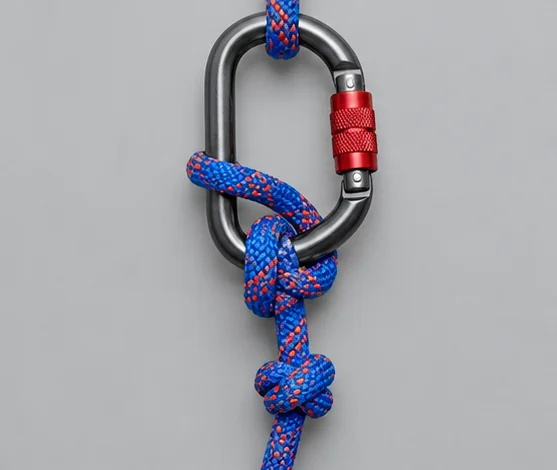
Demi-cabestan + mule
Freinage et blocage.
Ouvrir les fiches nœuds (cheminement, contrôle croisé, vidéo) →
Illustrations générées — non contractuelles ; la démonstration du formateur fait foi.
Démonstration sur corde réelle, puis binômes avec contrôle croisé (fiche par nœud). Vidéo Petzl FR pour le demi-cabestan + mule.
Ancrage provisoire et barre de baie
Sangle d’ancrage
- Support validé, arêtes protégées
- Éviter la charge triaxiale des connecteurs
- Direction de charge contrôlée
Barre de baie
- Dimensions admissibles, appuis, verrouillage
- Sens de charge, bâti résistant
- Accès à la porte condamné
- Test sans choc, plan de secours
Dispositif temporaire manufacturé : notice, marquage, butées, broche, appuis. Ne jamais utiliser comme ancrage un dispositif non prévu à cet effet.
Composer, calculer, se déplacer
Systèmes
Composer retenue, maintien et arrêt de chute avec des cartes matériel ; justifier chaque composant.
Tirant d’air
Calculer avec la notice, puis repérer sol, obstacles et effet pendulaire.
Longe double
Au moins un brin toujours connecté à un point autorisé, sur parcours pédagogique validé.
Ne jamais créer un instant sans protection lors d’un changement de point.
Ligne de vie temporaire : installer uniquement sur ancrages validés ; respecter portée, tension, nombre d’utilisateurs. Vidéo Petzl ASAP en ressource pour l’antichute mobile.
Sécuriser l’accès par échelle
- Stabiliser et fixer l’accès selon le mode opératoire
- Prévoir la prise en charge antichute avant l’exposition
- Ne jamais créer un instant sans protection
- Garder les trois points d’appui quand cela s’applique
- Balisage et interdiction de passage sous la zone
Rappel R. 4323-63 : l’échelle n’est pas un poste de travail, sauf exception (impossibilité technique, ou risque faible et courte durée).
Après une chute arrêtée
1 · Alerter
Immédiatement, selon les consignes du site.
2 · Protéger
Empêcher une seconde chute, sécuriser la zone.
3 · Secourir
Uniquement les manœuvres prévues, par des intervenants formés, si elles sont réalisables en sécurité.
Le matériel qui a arrêté une chute est retiré de l’utilisation et traité selon la notice.
Mise en situation contrôlée uniquement avec moyens validés ; sinon étude de cas.
Résultat collectif
Reprendre oralement chaque erreur. Le QCM contribue à l’évaluation ; la maîtrise pratique est appréciée séparément.
Aucun seuil de réussite dans le programme source : à définir avec l’organisme avant la session. Le score affiché est collectif et local à cet écran.
Bilan individuel
Grille pratique
- A acquis
- EC en cours
- NA non acquis
- NO non observé
Attestation de fin de formation
- Constate la formation effectivement suivie
- Ne remplace ni l’avis du service de prévention et de santé au travail, ni l’autorisation de travail de l’employeur
Ne pas confondre la « validation d’aptitude » annoncée au programme avec une décision médicale ou une habilitation réglementaire : à préciser contractuellement. Évaluation de satisfaction et bilan collectif : voir Formulaires.
Avant · Pendant · Après
Avant
Analyser la tâche, sécuriser poste et accès, protection collective d’abord, vérifier équipements, ancrages et notice, prévoir le secours.
Pendant
Respecter la configuration validée, rester protégé aux changements de point, surveiller les conditions, arrêter au moindre doute.
Après
Signaler les anomalies, retirer le matériel suspect, tracer selon la procédure du site.
Ressources en français
Liens contrôlés le 30/09/2026 (existence et langue). Le contenu des vidéos ne remplace pas la notice du fabricant.
Merci
Remise des attestations · évaluation de la formation · émargement de clôture